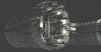

|
Stazione
spaziale completamente automatizzata e autorigenerante.
All'avvicinarsi di una nave, la scansiona con una sonda biomolecolare e si
riconfigura per accogliere adeguatamente la specie che si è avvicinata. È
fornita delle tecnologie di replicazione di cibo e materiali inanimati, oltre
che di cura medica degli ospiti e, all'apparenza, chiede in cambio alcuni pezzi
di secondaria importanza. All'equipaggio è richiesto di abbandonare le parti
sottoposte a manutenzione.
Come scopre l'equipaggio dell'Enterprise
nel 2152, però, essa rapisce
anche un membro dell'equipaggio per utilizzarne il cervello come centro di
calcolo all'interno del computer, usando un'interfaccia per convertire gli
impulsi neurali in codici binari. |
Dead Stop |
| Serie di strutture di monitoraggio della
Federazione
situate lungo il bordo della Zona Neutrale Romulana. Nel 2266 gli avamposti 2, 3, 4 e 8 vengono
distrutti da un'incursione dei
Romulani. |
Balance of Terror |
 Base
stellare su cui viene incarcerato
Michael Eddington. Base
stellare su cui viene incarcerato
Michael Eddington. |
Blaze of Glory |
 Stazione di ricerca
apparentemente simile al laboratorio Regula 1 situata nel settore Lantaru, a bordo della quale il dottor Ketteract, fisico della
Flotta Stellare, riesce a sintetizzare una singola
molecola Omega
all'incirca nel 2274. A seguito della destabilizzazione di quella
singola
molecola Omega, la stazione è stata distrutta e hanno
perso la vita, oltre al dottor Ketteract anche altri 126
scienziati. Stazione di ricerca
apparentemente simile al laboratorio Regula 1 situata nel settore Lantaru, a bordo della quale il dottor Ketteract, fisico della
Flotta Stellare, riesce a sintetizzare una singola
molecola Omega
all'incirca nel 2274. A seguito della destabilizzazione di quella
singola
molecola Omega, la stazione è stata distrutta e hanno
perso la vita, oltre al dottor Ketteract anche altri 126
scienziati. |
The Omega Directive |